Nextcloud
Cloud personnel qui synchronise mon dossier de cours entre mon PC portable et ma tour. Hébergé sur SSD, volume ajusté selon les besoins.
BTS SIO · Option SISR · Rennes
Étudiant en BTS Services Informatiques aux Organisations, je cherche une alternance en administration systèmes et réseaux. Disponible immédiatement.
Projet phare
Mon propre serveur, à la maison. Un cloud personnel accessible de partout, sécurisé par VPN et sauvegardé chaque nuit, construit sur une station de travail de récupération.
Depuis mon téléphone ou mon PC portable, j'accède à mes fichiers de cours comme s'ils étaient sur mon bureau, sans OneDrive ni Google Drive.
Chaque connexion distante passe par un VPN WireGuard. Aucun accès à mes services ne se fait en clair sur Internet.
Ma box dispose d'une IPv4 publique. Une seule redirection de port, vers le conteneur VPN : c'est la seule porte ouverte vers l'extérieur.
Proxmox VE 9 tourne sur une Dell Precision 5820 (Xeon W-2102, 16 Go de RAM ECC). Chaque service vit dans son propre conteneur LXC, léger et isolé. Accès admin protégé par double authentification.
Tous les jours à 3 h, les conteneurs sont sauvegardés sur un disque dédié. Les trois dernières versions sont conservées et je reçois une notification à chaque sauvegarde, réussie ou échouée.
Cloud personnel qui synchronise mon dossier de cours entre mon PC portable et ma tour. Hébergé sur SSD, volume ajusté selon les besoins.
VPN dans un conteneur dédié. Clients configurés sur smartphone et PC portable, accès distant validé.
Planifiées chaque nuit à 3 h, rotation sur 3 versions, notification de réussite ou d'échec.
Double authentification sur Proxmox, mises à jour appliquées, services accessibles à distance uniquement via le VPN.
Les coulisses
Problème : WireGuard doit être joignable depuis Internet. Beaucoup de box partagent une même adresse IP entre plusieurs clients (CGNAT), ce qui rend l'accès entrant impossible.
Solution : j'ai vérifié que l'adresse WAN de ma box correspondait bien à mon IP publique avant de configurer la redirection de port vers le conteneur VPN.
Problème : je voulais réutiliser des disques durs de récupération, dont l'état était inconnu.
Solution : je les ai testés un par un avec un adaptateur SATA-USB. Un disque, issu d'un ancien iMac, était hors d'usage : je l'ai écarté puis détruit pour qu'aucune donnée ne puisse en être récupérée.
Problème : l'espace prévu pour Nextcloud est vite devenu trop petit, et mon disque dur de 1 To est ancien.
Solution : j'ai agrandi le volume de données Nextcloud sur le SSD, et réservé le vieux disque aux sauvegardes : s'il lâche, je ne perds qu'une copie, pas les données d'origine.
Testé avant la production
Avant de monter un miroir sur le vrai serveur, je l'ai testé dans un Proxmox virtualisé sous VMware : un miroir ZFS (l'équivalent du RAID 1) sur deux disques, une panne simulée, puis le remplacement du disque et la vérification des données.
Lire la procédure (PDF)En vrai
Cliquez sur une image pour l'agrandir.
Feuille de route
Montage et reconditionnement
Choisir des composants compatibles, monter, diagnostiquer, redonner une seconde vie : c'est par là que tout a commencé.
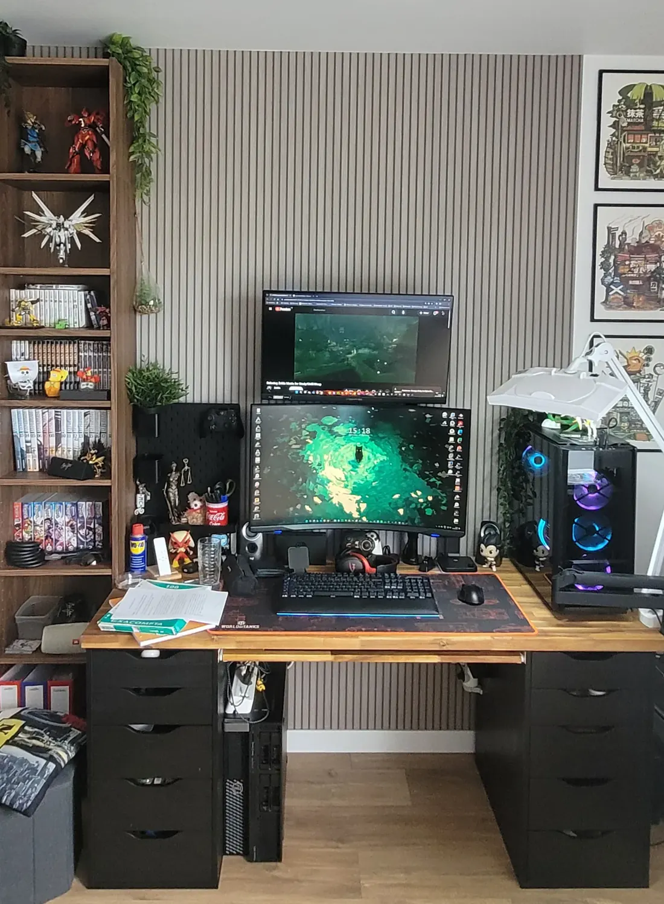
Monté par mes soins en 2020, c'est ma machine de tous les jours, pour travailler, développer et jouer. Elle évolue au fil du temps, au rythme de mes besoins.
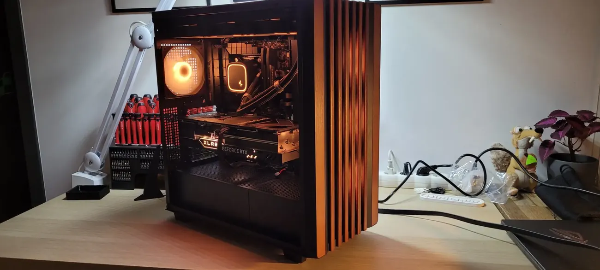
Son propriétaire avait besoin d'une machine dédiée au développement et à la cybersécurité. J'ai préparé la configuration, choisi chaque composant pour cet usage, puis monté le tout dans un boîtier au design épuré, aux finitions chaudes.
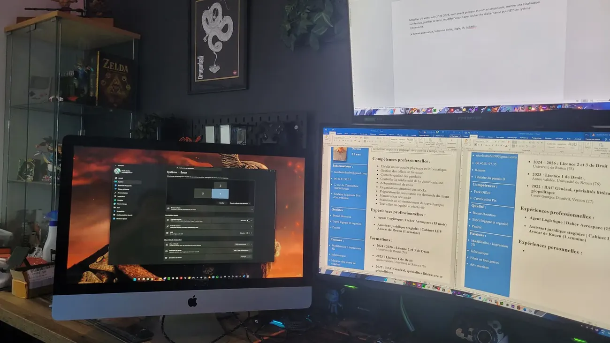
Démontage complet, identification de la référence de la dalle IPS, retrait des composants inutiles, puis installation d'une carte contrôleur avec boîtier et panneau de commande externes.
Résultat : un écran 2560 × 1440 à 60 Hz qui a trouvé une seconde vie, au lieu de finir à la déchetterie.
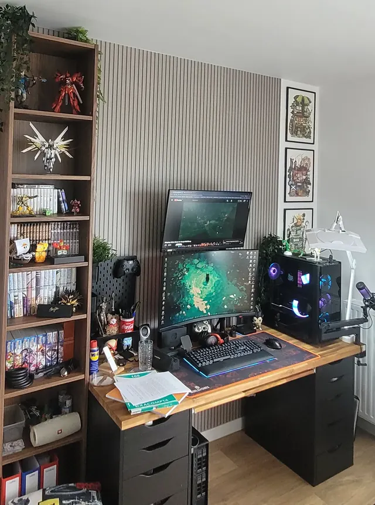
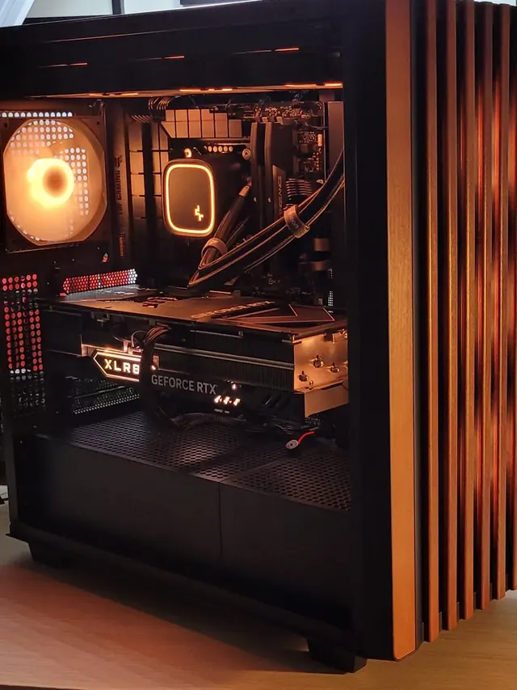
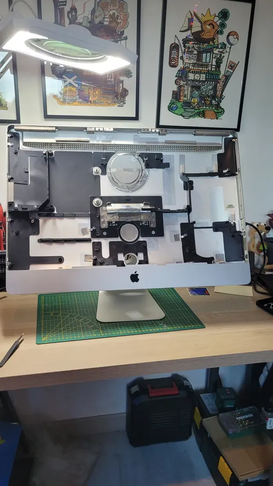
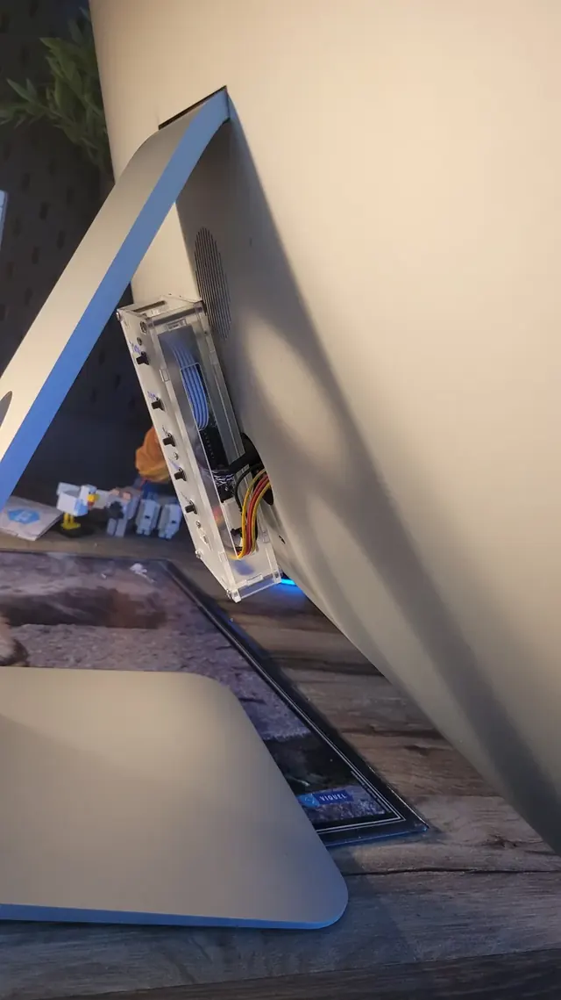
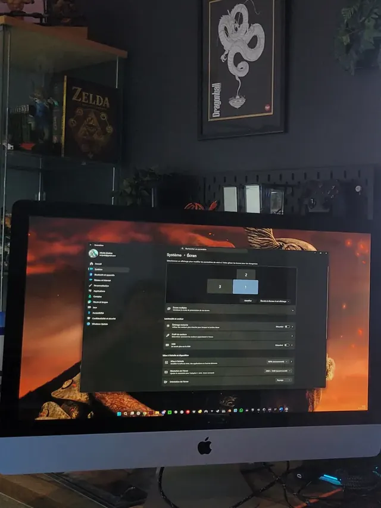
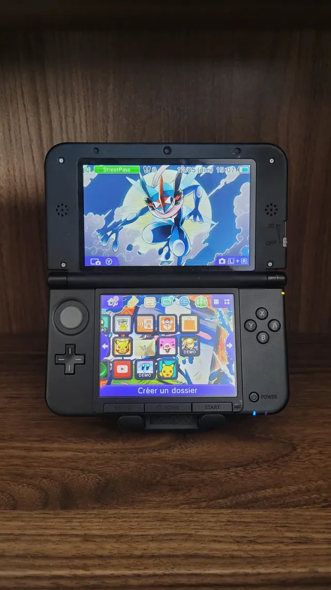
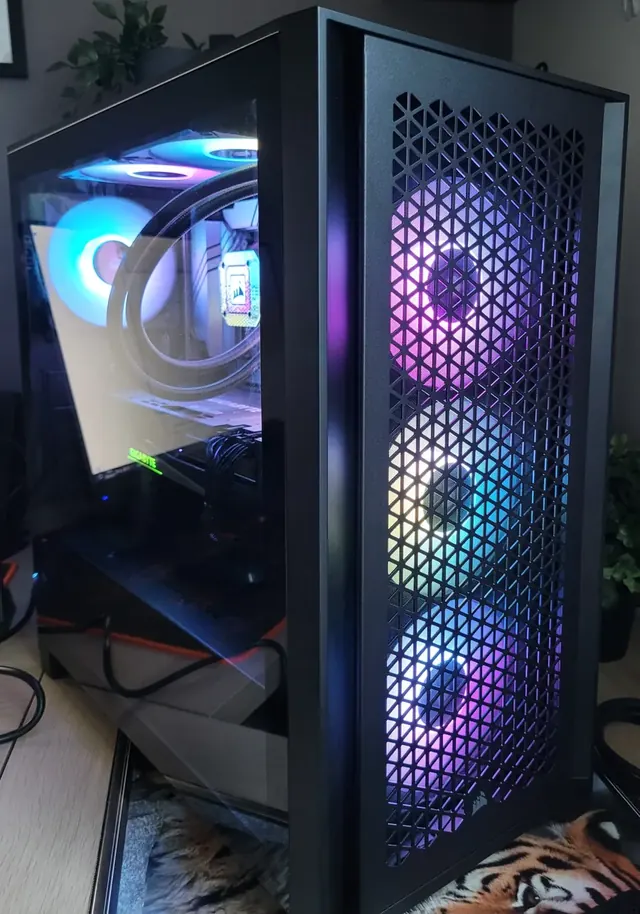
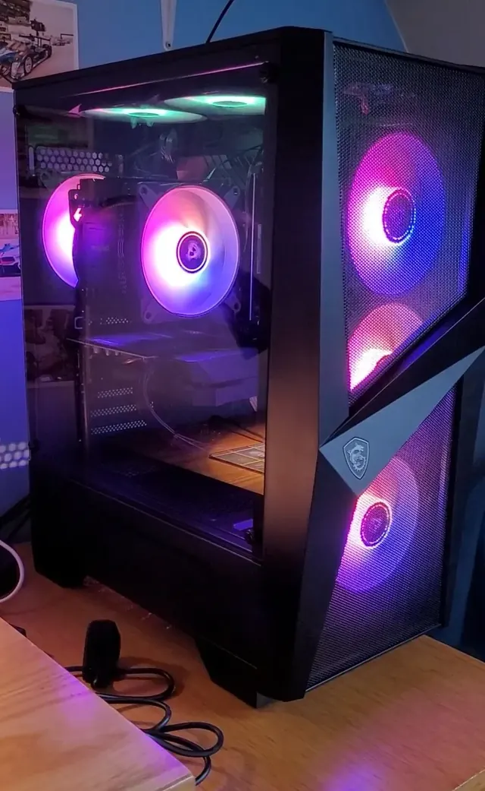
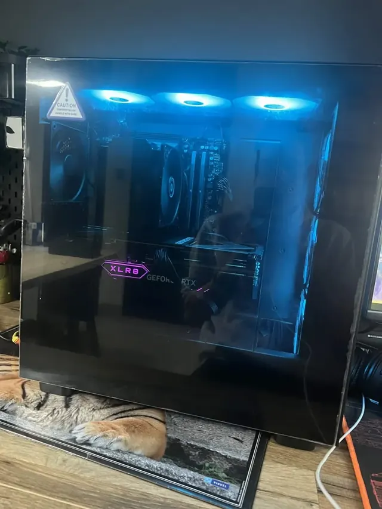
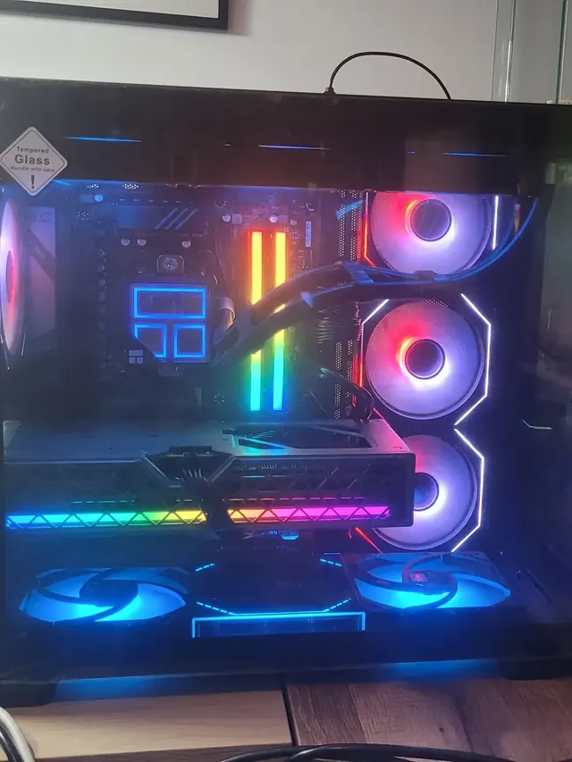
Application Android · SkylandCollec
Une application terminée pour référencer et suivre une collection de figurines Skylanders, développée en Kotlin sous Android Studio.
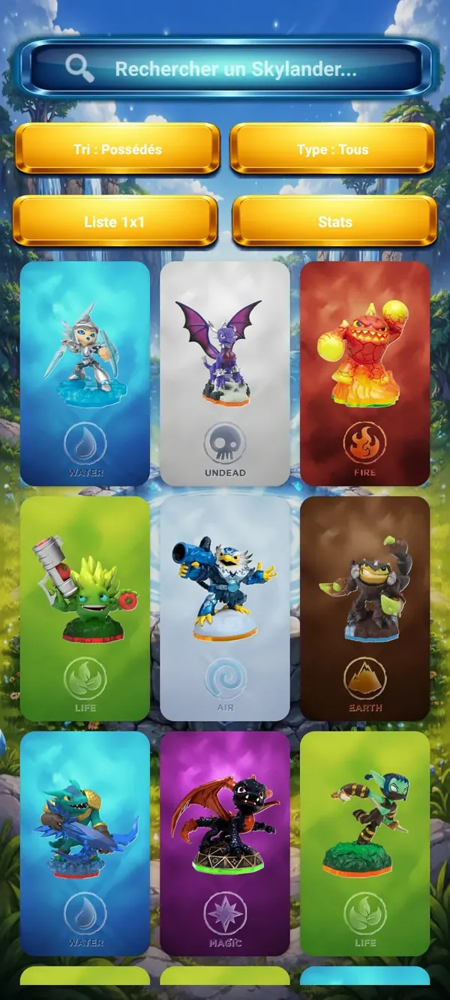
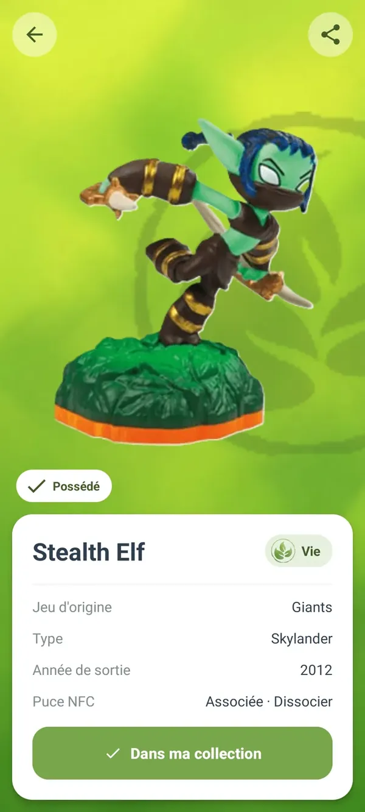
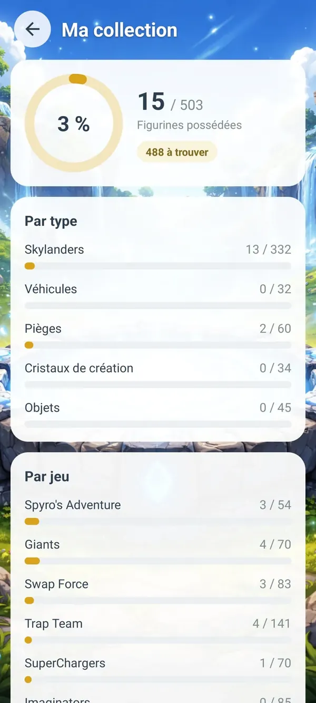
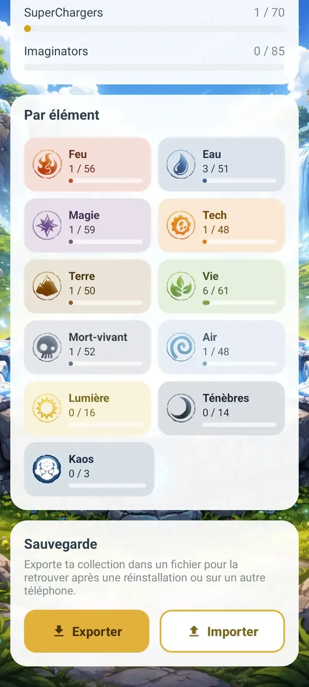
Projet mené avec l'assistance de l'IA : j'ai défini les fonctionnalités, piloté le développement étape par étape, testé et corrigé jusqu'à une application terminée.
Parcours
Le droit m'a appris la rigueur et l'écriture. L'industrie m'a appris les procédures. L'informatique, je l'ai choisie.
MyDigitalSchool, Rennes. En alternance, une semaine en entreprise et une semaine à l'école.
Sur le site d'ArianeGroup. Gestion des stocks sous SAP, inventaires, suivi des livraisons, travail en équipe dans un secteur exigeant.
Université de Rouen, droit général et droit des affaires. Rigueur d'analyse, rédaction, sensibilité à la protection des données.
Spécialités littérature et géopolitique, lycée Georges Dumézil, Vernon.
Disponible immédiatement
Je cherche une alternance de deux ans en systèmes et réseaux.
Télécharger mon CV